角度、相机、灯光不变：两组实际达到 155°。真实侧视和斜视中，膝前恢复连续圆弧。保留原腿部与臀部 Jiggle，未靠缩小屈曲、换灯光或关闭修形隐藏问题。最终视觉验收仍由用户查看下方视频。
最终权重和静态辅助骨层原本就存在深屈曲压缩。旧膝部 Corrective 把这一压缩后的 LBS 表面作为安全方向基准，并限制蒙皮前逆变换位移，使恢复体积所需的源修形被大量压低；旧日志中 135°–150° 局部只保留约 6%–13%。采样还止于 150°，不能完整覆盖 155°。
修改通用 VamKneeCorrectiveBuilder：以有效源姿态的连续角度增量进行既有三角形/边长保护，异常时回退到上一有效源姿态，而非压扁的 LBS。随后用最终实际蒙皮算子反解并验证重构，采样扩展为 −15° 至 165°、间隔 5°。没有关闭安全检查；右侧源目标局部确有问题，155° 最大保护调整 0.614 cm。失败试验日志一并保留。
验证：前后主骨矩阵一致；最终权重层和静态辅助骨层表面变化为 0，改进首次出现在 Corrective 层。表中是原先追踪的左右硬折边，数值下降与真实轮廓改善相符；最大位移是修复量，不是相对 VaM 的误差。
| 方案 | 155° 修复前夹角 | 修复后夹角 | 腿部最大修复位移 |
|---|---|---|---|
| C | 43.89° / 45.31° | 2.61° / 0.16° | 6.614 cm |
| M | 60.74° / 60.83° | 3.44° / 1.48° | 6.676 cm |
C++ 编译（含等价四元数符号规范化）、资产 build/reload/verify、4 段 PIE 动作、M 的 Editor 深跪姿、膝部驱动自动测试均已实跑。逐层数据 · 接缝与几何检查 · PIE · Editor · 自动测试 · 资产校验
新 BP：/Game/VamKneeDeepRepair/Runtime/R_b0fb16bb9c72f17da9d62df2/BP_VamCharacter.BP_VamCharacter
身份：b0fb16bb9c72f17da9d62df2950831db38540c0c8876af19ce11eb8700df13d6。在内容浏览器加载此 BP 查看；原 BP 未覆盖。生成器已更新，之后正常重建也使用同一修复。
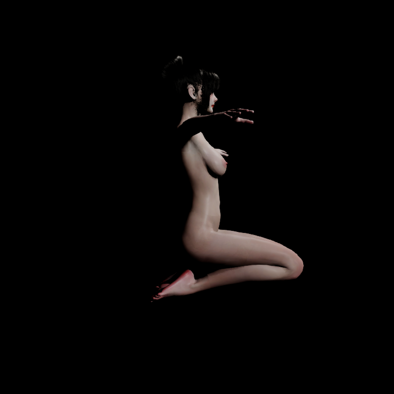
12 组分层快照中的同源重复点最大差为 0；8 个视频流与 24 个解码抽帧已核验。视频校验
这是深屈曲蒙皮修形修复。C 的接触求解仍在高屈曲帧停用，未宣称修复软组织自碰撞；M 在膝后压缩区仍有相对 C 的局部几何标记（155°：28 条新增硬边阈值、4 个相对反向面），不是本次已消除的膝前尖折；未宣称 M 全表面或完整接触系统通过。这些相对标记不直接等于真实网格翻转。本轮未处理历史 Editor/PIE 动态辅助骨逐帧差异。155° 使用明确标记的诊断膝输入，生产关节限位未改。视频 30 FPS 为编码速度，不是性能测试。保护未证明任意极端体型或超过 165° 的姿态正确。
参考：Epic：姿态驱动修形；Disney：蒙皮关节形变研究。本次实际采用既有源算子与 Morph 路径，没有引入论文中的 CoR 求解器。
左修复前 / 右修复后；下方静帧为上修复前 / 下修复后。同一实际膝角度和相机。
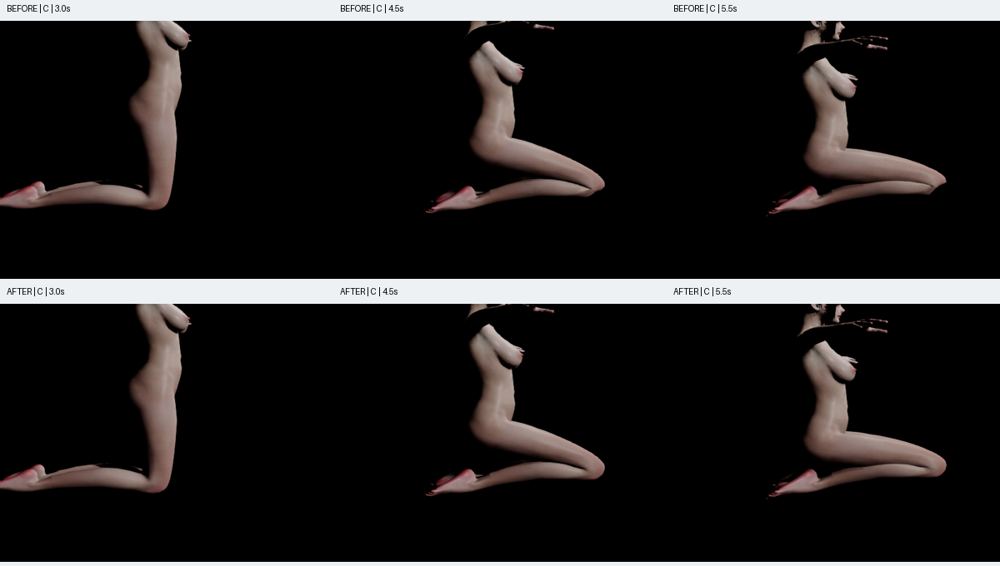
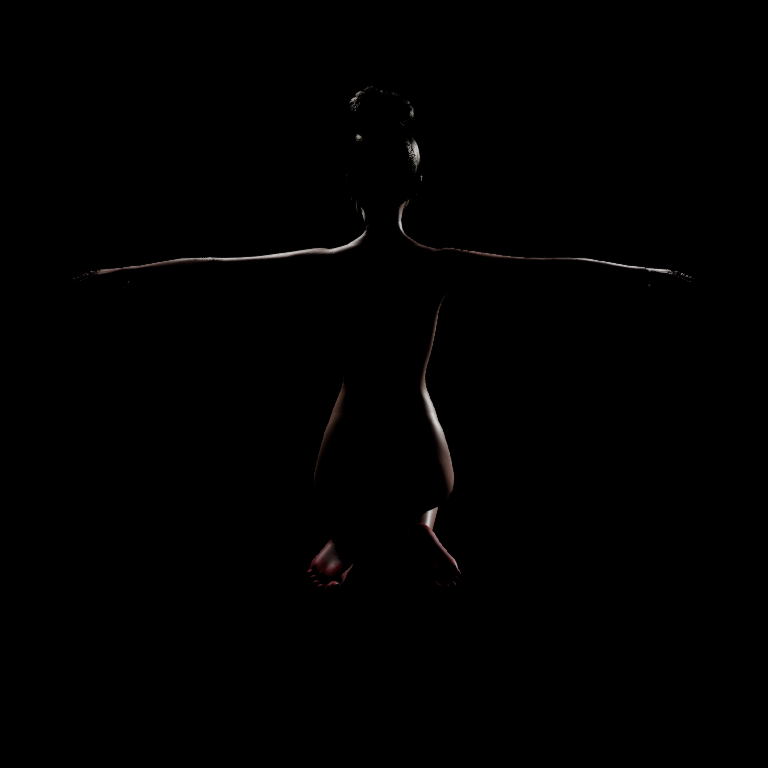
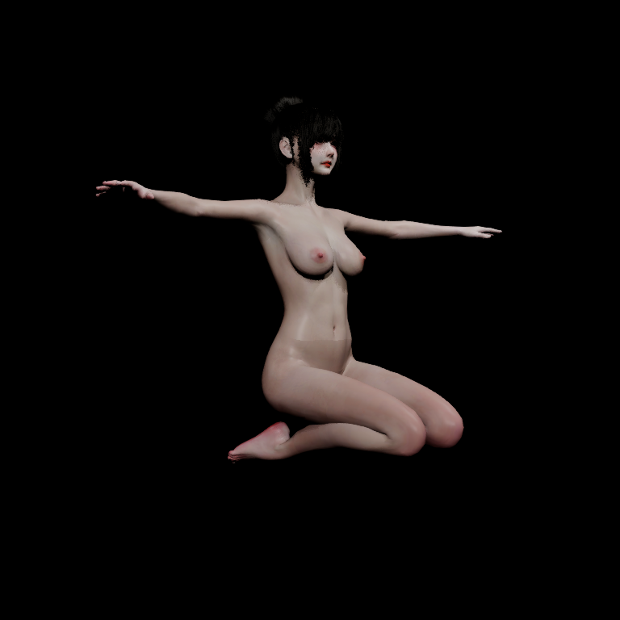
左修复前 / 右修复后；下方静帧为上修复前 / 下修复后。同一实际膝角度和相机。
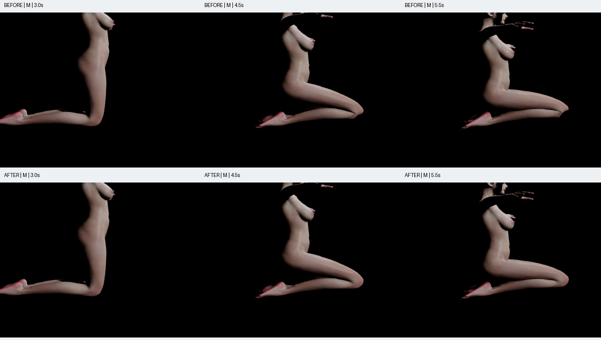
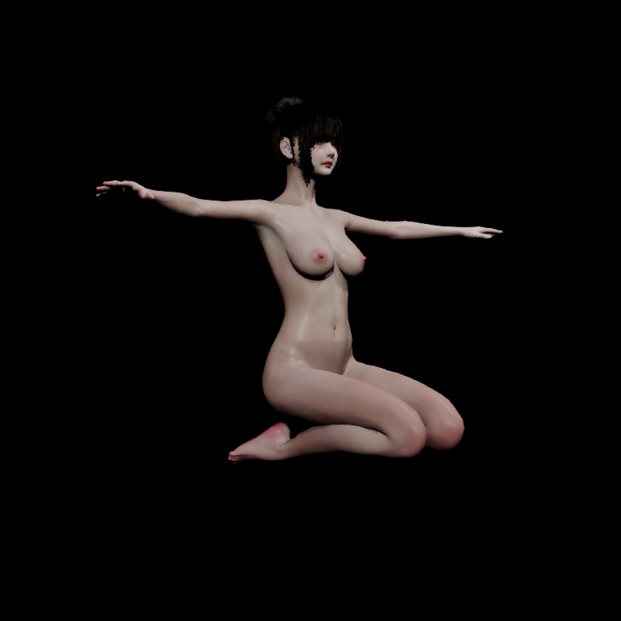
左修复前 / 右修复后；下方静帧为上修复前 / 下修复后。同一实际膝角度和相机。
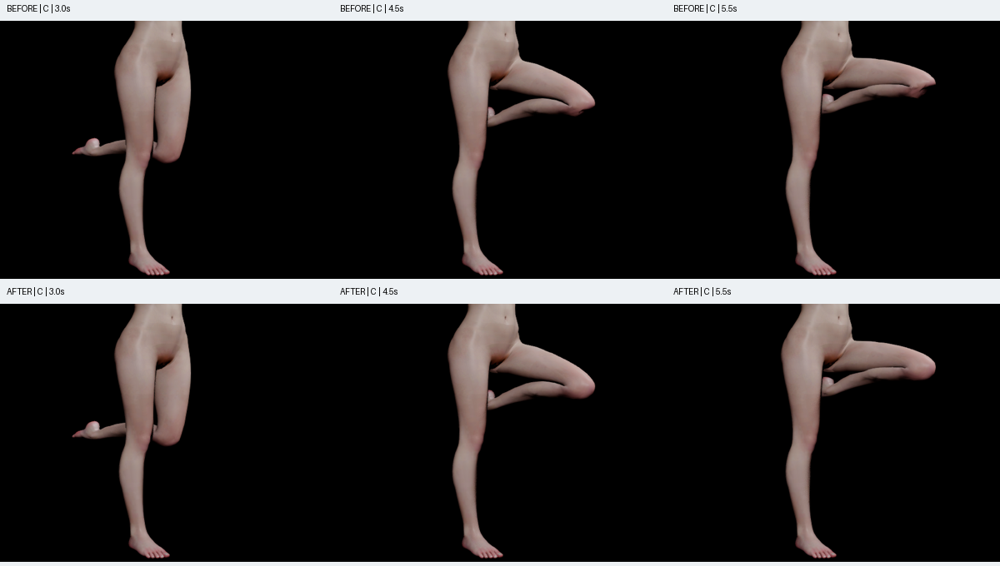
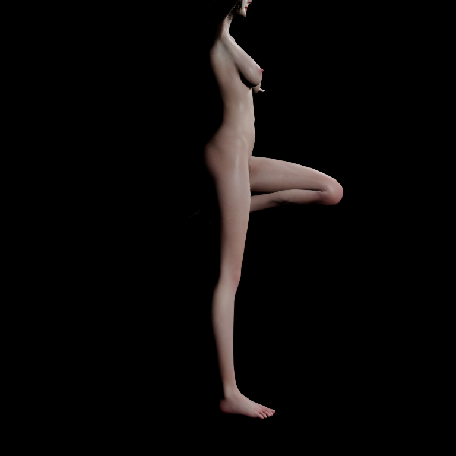
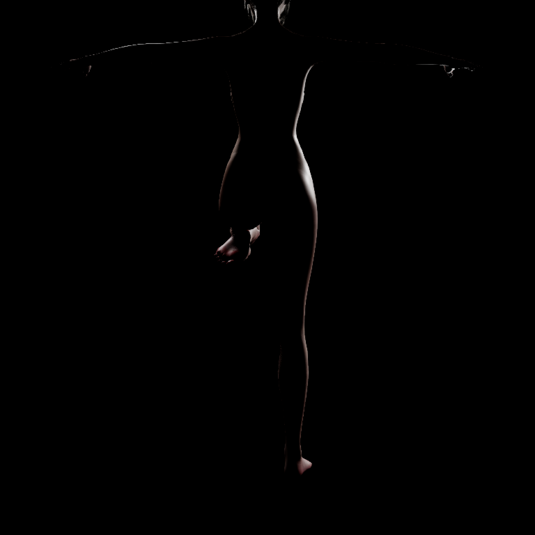
左修复前 / 右修复后；下方静帧为上修复前 / 下修复后。同一实际膝角度和相机。
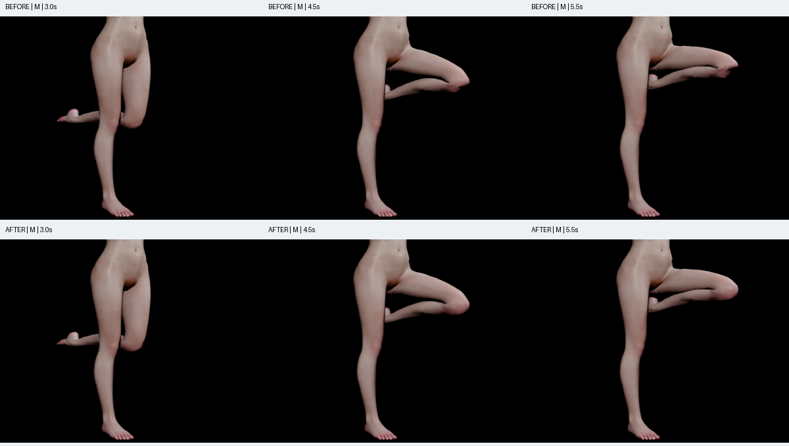
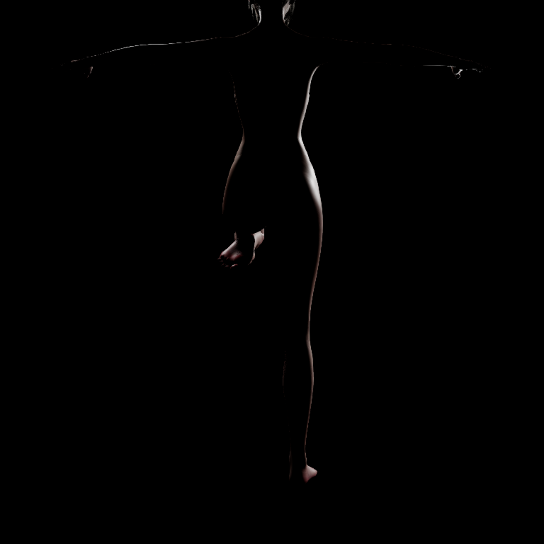
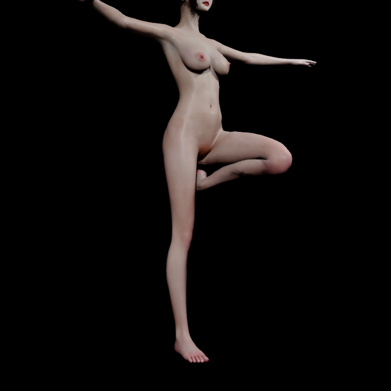